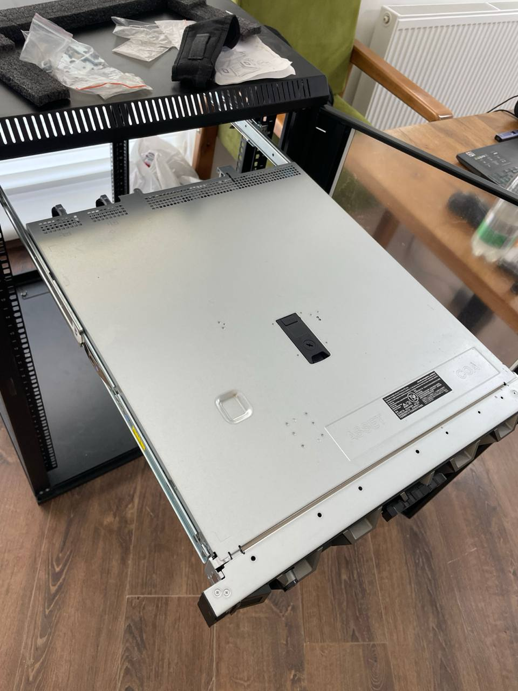
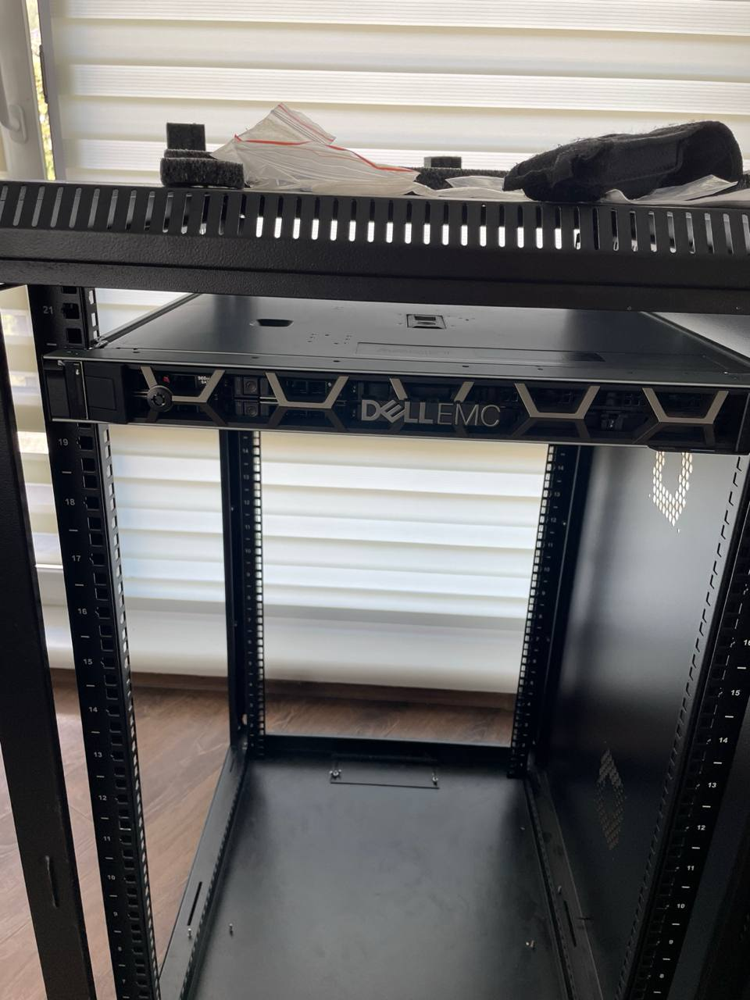
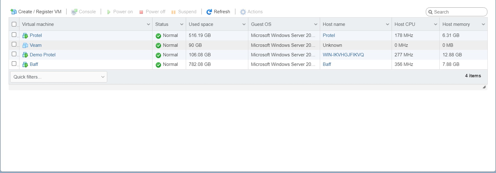
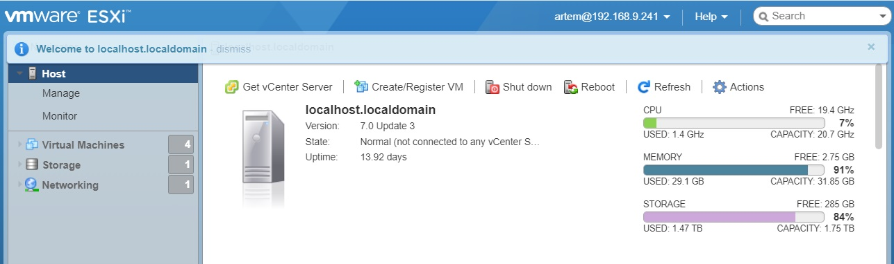
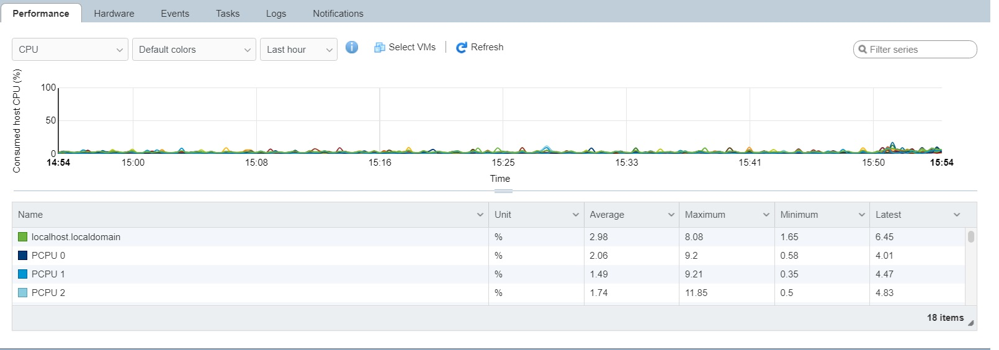
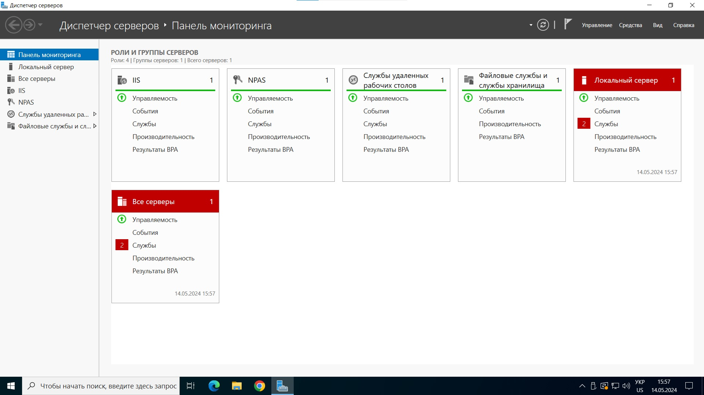

Проект полягав у встановленні та налаштуванні нового сервера DELL, придбаного компанією. Основним завданням було забезпечення оптимальної роботи обладнання для потреб компанії, яке включало кілька ключових етапів:
Опис та візуалізація результатів роботи, включаючи скріншоти та відео. Нижче представлено кілька знімків, що демонструють встановлення сервера, налаштування віртуальних машин і системи для бекапів.
     Знання та навички практиканта в області мереж та системного адміністрування дозволили йому успішно виконувати індивідуальний проект. Серед завдань були такі як: встановлення серверного обладнання DELL EMC R350, інсталяція і подальше налаштування ОС ESXi 7.0, створення чотирьох віртуальних машин із встановленням Windows Server 2022, створення та налагодження ВМ для бекапів, тестування відмовостійкості та працездатності системи.
Також важливо, що він дотримувався трудового розпорядку компанії та прислухався до порад керівника. Його висока працездатність та старанність свідчать про здатність ефективно працювати над проектами та досягати поставлених цілей.